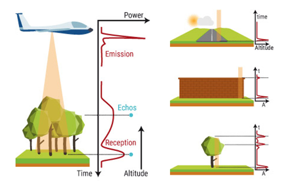

Applications
- 1. Personnalisation à grande échelle : Focus sur la reconstruction 3D
- 2. Automatisation intelligente : Focus sur les outils d'automatisation de flux et de traitement des données
- 3. Approche préventive
- 4. Amélioration du service client : Focus sur les chatbots
L'IA transforme profondément le secteur de l'assurance en 2025, avec des applications innovantes dans plusieurs domaines clés:
1. Personnalisation à grande échelle : Focus sur la reconstruction 3D
Exemples de personnalisation :
- Allianz exploite l'apprentissage automatique pour analyser l'historique des sinistres, les données de santé et le comportement des clients afin de personnaliser les offres d'assurance. [Livre: Les fondamentaux de l’IA dans l’assurance]
- AXA a mis en place un système de tarification dynamique qui ajuste les primes en temps réel en fonction de l'évolution des données du marché, offrant ainsi des tarifs plus compétitifs et adaptés. [Développement d’une tarification spécifique dommages AXA]
La reconstruction 3D
La reconstruction 3D révolutionne l'évaluation des sinistres en offrant une visualisation précise et détaillée des dommages :
-
Exemple:
- Matterport utilise des caméras 3D et des algorithmes avancés pour créer des modèles numériques détaillés des espaces endommagés.
Technologie : Les caméras capturent des images et des données de profondeur à l'aide de capteurs LiDAR et de photographie HDR.
La technologie LiDAR (Light Detection and Ranging) utilise des faisceaux laser pour mesurer les distances avec une grande précision. Elle fonctionne en émettant des impulsions laser vers une cible et en mesurant le temps que mettent ces impulsions à revenir après avoir été réfléchies par la cible. Les données collectées permettent de créer des modèles 3D détaillés de l'environnement. Source: https://www.yellowscan.com/fr/knowledge/how-does-lidar-work/
Principe de fonctionnement :- Emission : Un émetteur envoie des impulsions laser vers la cible.
- Réflexion : Les impulsions laser sont réfléchies par la cible.
- Réception : Un récepteur capte les impulsions réfléchies.
- Calcul : Le temps de vol des impulsions est mesuré pour calculer la distance entre l'émetteur et la cible.
Les algorithmes de vision par ordinateur et de photogrammétrie traitent ces données pour générer des modèles 3D précis. Ces modèles permettent aux experts d'évaluer les sinistres à distance avec une précision inégalée, en offrant des vues interactives et des mesures exactes des dimensions des espaces. - Les assureurs peuvent intégrer ces modèles 3D dans leurs systèmes de gestion des sinistres, facilitant la collaboration entre les experts, les clients et les réparateurs.
Source: https://wingmanmedia.com.au/matterport-3d/
2. Automatisation intelligente : Focus sur les outils d'automatisation de flux et de traitement des données
Exemples d'outils d'automatisation de flux et de traitement des données
- Databricks :
- Plateforme unifiée d'analyse de données qui combine l'ingénierie des données, la science des données et l'apprentissage automatique.
- Permet de créer des pipelines de données robustes et évolutifs pour traiter et analyser des volumes massifs de données en temps réel.
- Apache Airflow :
- Outil de gestion de workflow open-source utilisé pour orchestrer des pipelines de données complexes.
- Permet de définir, planifier et surveiller des workflows de manière programmatique.
- Intègre des visualisations pour suivre l'état des tâches et des dépendances entre elles.
- Amazon Web Services (AWS) :
- Offre une suite complète de services pour le traitement et l'analyse des données, tels que AWS Glue, AWS Lambda et Amazon Redshift.
- AWS Glue permet l'extraction, la transformation et le chargement (ETL) des données de manière automatisée.
- AWS Lambda permet d'exécuter du code en réponse à des événements sans gérer de serveurs, facilitant l'automatisation des tâches.
- Amazon Redshift est un entrepôt de données rapide et évolutif pour l'analyse de données à grande échelle.


3. Approche préventive
Détection de fraude
La détection de fraude est un domaine clé où l'IA apporte une valeur ajoutée significative :
- Analyse prédictive : Les algorithmes d'apprentissage automatique analysent les données historiques pour identifier des modèles de fraude potentiels.
- Surveillance en temps réel : Les systèmes d'IA surveillent les transactions en temps réel pour détecter des comportements suspects et déclencher des alertes instantanément.
- Reconnaissance d'anomalies : Les techniques de détection d'anomalies permettent d'identifier des activités inhabituelles qui pourraient indiquer une fraude.
- Automatisation des enquêtes : Les outils d'IA automatisent les processus d'enquête en collectant et en analysant les preuves, ce qui accélère la résolution des cas de fraude.
Nouvelle technologie de détection de fraude
La nouvelle méthode de détection de fraude proposée dans cette veille repose sur une architecture de réseau d'assurance basée sur la blockchain et l'IA. En utilisant des contrats intelligents, les règles de traitement des réclamations sont codées pour automatiser le processus de remboursement, réduisant ainsi les coûts et les erreurs humaines. La blockchain permissionnée permet aux compagnies d'assurance de stocker et partager des informations de manière sécurisée, avec un contrôle d'accès strict. Le consensus est atteint rapidement grâce à l'algorithme PBFT, permettant un traitement efficace des transactions. Les données collectées sont partagées entre les pairs du réseau, facilitant l'utilisation d'algorithmes d'apprentissage automatique pour la détection de fraude en temps réel. Les transactions sont validées par des signatures numériques, assurant l'intégrité et la sécurité des informations. Cette approche offre une meilleure confidentialité et sécurité par rapport aux blockchains publiques, en limitant l'accès aux participants approuvés.

Architecture de SISBAR. La ligne continue se réfère à la stratégie d'apprentissage hors ligne. Les lignes pointillées indiquent la stratégie d'apprentissage en ligne où les données sont continuellement alimentées au modèle d'apprentissage automatique. Dans cette figure, la couleur rouge indique les données alimentées pour les modules d'apprentissage automatique hors ligne et en ligne, et la couleur verte indique les données, étiquetées manuellement, qui sont alimentées au modèle d'apprentissage en ligne afin de mettre à jour ses poids et d'améliorer sa précision.
4. Amélioration du service client : Focus sur les chatbots
Les chatbots et assistants virtuels révolutionnent le service client :
Une technologie récente est les RAG (Retrieval-Augmented Generation) qui permettent d'être nourris par des documentations et de répondre aux clients de manière plus précise et contextuelle.
Architecture des RAG
Les RAG combinent des modèles de génération de langage (comme les LLM - Large Language Models) avec des systèmes de récupération d'informations. Voici comment cela fonctionne :
- Un module de récupération d'informations recherche dans une base de données ou une documentation pour trouver les informations pertinentes.
- Les informations récupérées sont ensuite utilisées pour alimenter le modèle de génération de langage.
- Le modèle de génération produit une réponse contextuelle et précise en utilisant les informations récupérées.

Source: https://aws.amazon.com/fr/what-is/retrieval-augmented-generation/
Bénéfices des RAG par rapport aux LLM
- Précision accrue : Les RAG peuvent fournir des réponses plus précises en utilisant des informations spécifiques et à jour provenant de la documentation.
- Réduction des hallucinations : En s'appuyant sur des données récupérées, les RAG réduisent les risques de générer des informations incorrectes ou inventées.
- Adaptabilité : Les RAG peuvent être facilement mis à jour avec de nouvelles informations, ce qui les rend plus adaptables aux changements et aux nouvelles connaissances.
- Contexte enrichi : En combinant récupération et génération, les RAG peuvent fournir des réponses plus contextuelles et pertinentes pour les utilisateurs.
Sources
- Ramesh Pingili. AI-driven intelligent document processing for healthcare and insurance. International Journal of Science and Research Archive, 2025, 14(01), 1063-1077. Article DOI: https://doi.org/10.30574/ijsra.2025.14.1.0194.
- Balasubramanian, R., Libarikian, A., & McElhaney, D. (2018). Insurance 2030—The impact of AI on the future of insurance. McKinsey & Company. 1844-McKinsey-insurance-2030-the-impact-of-ai-on-the-future-of-insurance-f.pdf.
- Galena Pisoni, Natalia Díaz-Rodríguez, Responsible and human centric AI-based insurance advisors. Responsible and human centric AI-based insurance advisors - ScienceDirect.
- N. Dhieb, H. Ghazzai, H. Besbes and Y. Massoud, "A Secure AI-Driven Architecture for Automated Insurance Systems: Fraud Detection and Risk Measurement," in IEEE Access, vol. 8, pp. 58546-58558, 2020, doi: 10.1109/ACCESS.2020.2983300.
- Lamberton, Chris and Brigo, Damiano and Hoy, Dave, Impact of Robotics, RPA and AI on the Insurance Industry: Challenges and Opportunities (November 29, 2017). Journal of Financial Perspectives, Vol. 4, No. 1, May 2017, Available at SSRN: https://ssrn.com/abstract=3079495.
- Qu'est-ce que l'automatisation robotisée des processus (RPA) ? (SAP). Qu'est-ce que l'automatisation robotisée des processus (RPA) ? | SAP.
- https://www.banquedesterritoires.fr/experience/grace-lintelligence-artificielle-la-capi-fait-la-chasse-aux-fuites-deau-38.
- Matterport 3D https://wingmanmedia.com.au/matterport-3d/.
- Livre: Les fondamentaux de l’IA dans l’assurance
- Développement d’une tarification spécifique dommages AXA